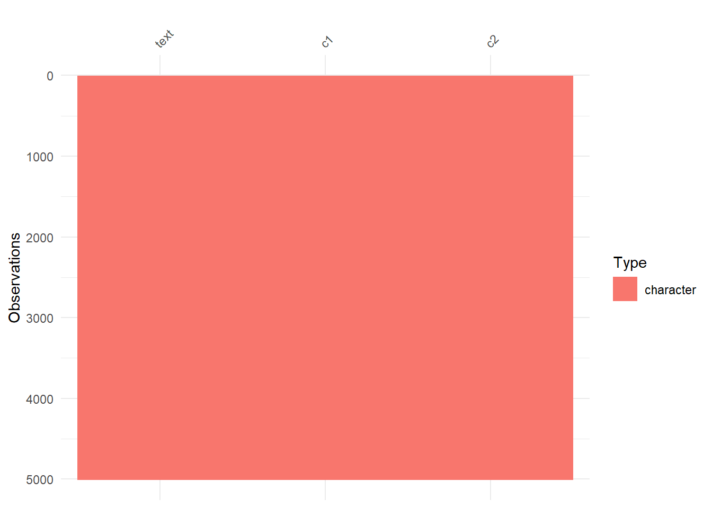
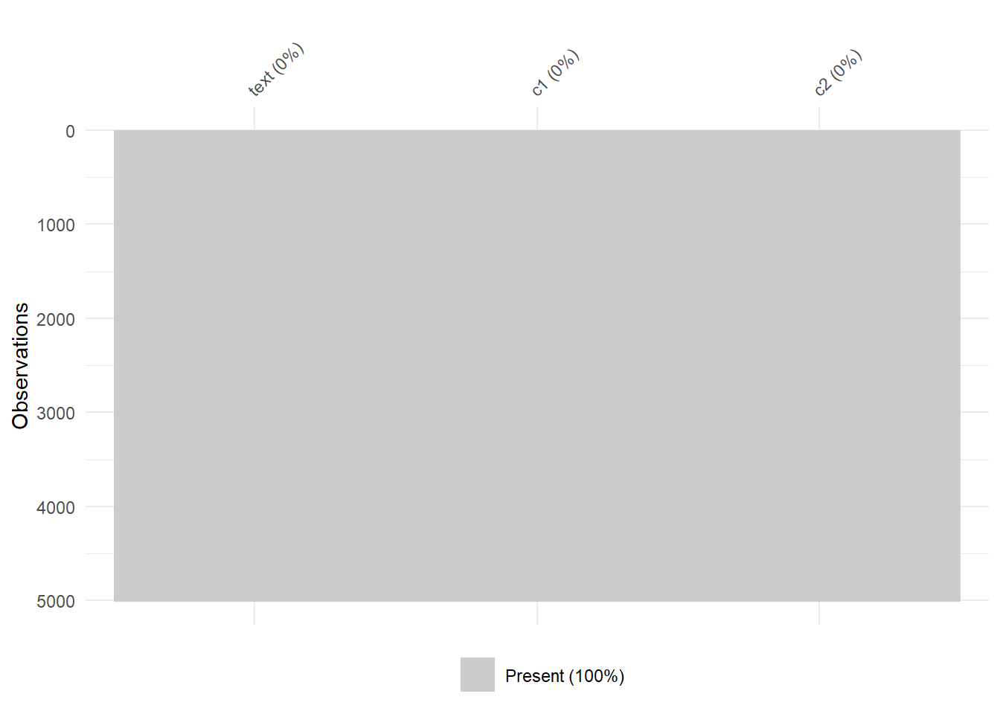
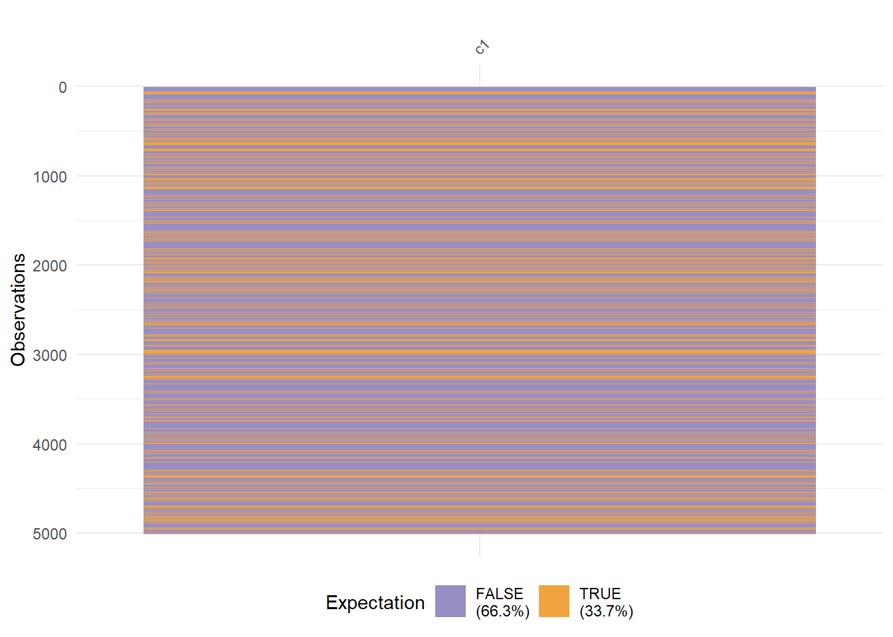
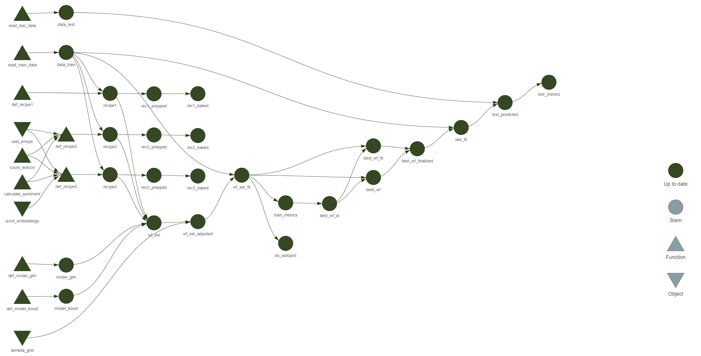
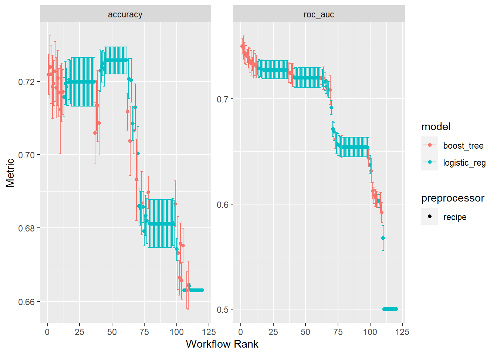

library(targets)
library(tidyverse)
library(tidymodels)
library(tidytext)
library(visdat)
library(remoji)
library(lsa)
library(SnowballC)
library(easystats)
library(textrecipes)
library(fastrtext)Vorhersage von Hassrede
1 Einleitung
Diese Analyse untersucht einen Datensatz der Universität Heidelberg (Wiegand 2019), bei dem Tweets bewertet wurden, ob sie offensive language enthalten. Das Ziel dieser Analyse ist es, ein prädiktives Modell zu entwickeln, um möglichst Präzise vorhersagen zu können, ob ein neuer Tweet offensive language und somit möglicherweise Hassrede enthält.
2 Setup
2.1 Pakete laden
2.2 Datensatz laden
data_path <- "data/GermEval-2018-Data-master/germeval2018.training.txt"
d <- data_read(data_path, header = FALSE, quote="")names(d) <- c("text", "c1", "c2")3 EDA
vis_dat(d)
vis_miss(d)
d %>%
select(c1) %>%
vis_expect(., ~.x == "OFFENSE")
Etwa ein Drittel der gegebenen Tweets im train-Datensatz wurden als offensive eingestuft.
3.1 Stemming & Häufigste Wörter
d <- d %>%
rowid_to_column("id")3.1.1 Tweets tokenisieren
d_tokenized <- d %>%
unnest_tokens(input = text, output = token, token = "tweets")Using `to_lower = TRUE` with `token = 'tweets'` may not preserve URLs.3.1.2 Stopwords entfernen
data(stopwords_de, package = "lsa")
stopwords_de <- tibble(word = stopwords_de)
stopwords_de <- stopwords_de %>%
rename(token = word)d_nostop <- d_tokenized %>%
anti_join(stopwords_de)Joining, by = "token"3.1.3 Stemming
d_stemmed <- d_nostop %>%
mutate(token_stem = wordStem(token, language = "de"))d_stemmed %>%
count(token_stem, sort = TRUE) %>%
head(n = 10) token_stem n
1 | 2577
2 lbr 1287
3 😂 494
4 man 393
5 deutsch 373
6 schon 351
7 merkel 335
8 😜 284
9 er 252
10 deutschland 246Die häufigst genutzten Wörter lassen nur wenige Rückschlüsse ziehen. Man sieht aber, dass häufig emojis genutzt werden, um Aussagen zu unterstreichen. Sie zu analysieren könnte also sinnvoll sein. Auch scheinen sich die Tweets größtenteils mit den Themen Deutschland, Politik und PolitikerInnen zu beschäftigen.
3.2 Sentimentanalyse
sentiws <- read_csv("data/sentiws.csv") #https://osf.io/x89wq/?action=downloadRows: 3468 Columns: 4
── Column specification ────────────────────────────────────────────────────────
Delimiter: ","
chr (3): neg_pos, word, inflections
dbl (1): value
ℹ Use `spec()` to retrieve the full column specification for this data.
ℹ Specify the column types or set `show_col_types = FALSE` to quiet this message.d_senti <- d_nostop %>%
inner_join(sentiws, by = c("token" = "word"))d_senti %>%
group_by(c1) %>%
summarise(mean(value))# A tibble: 2 × 2
c1 `mean(value)`
<chr> <dbl>
1 OFFENSE -0.0802
2 OTHER -0.0374Tweets, die als offensive eingestuft wurden, weisen allgemein ein negativeres Sentiment auf, als andere. Folgend könnte das Sentiment der Wörter eines Tweets einen Prädiktor für Hate Speech darstellen.
4 Vorhersage
Die Vorhersage der Daten wird über das targets-Package gemacht. Dazu wurde folgender Code in der _targets.R Datei mit tar_make() ausgeführt.
Weitere Dateien, auf die dieser Code zugreift: train-data.R, test-data.R, def-recipes.R, def-models.R, utility.R.
In den Rezepten 1 und 2 wird Term Frequency Inverse Document Frequency (tf-idf) zur Vorhersage genutzt, in Rezept 3 werden dazu Wordembeddings aus FastText (Grave u. a. 2018) verwendet.
source("funs/train-data.R")
source("funs/test-data.R")
source("funs/def-models.R")
source("funs/def-recipes.R")
source("funs/utility.R")
tar_option_set(packages = c("tidyverse", "tidymodels", "tidytext", "SnowballC", "easystats", "textrecipes", "remoji", "fastrtext"))
# Pipeline
list(
tar_target(data_train, read_train_data()),
tar_target(data_test, read_test_data()),
tar_target(recipe1, def_recipe1(data_train)),
tar_target(rec1_prepped, prep(recipe1)),
tar_target(rec1_baked, bake(rec1_prepped, new_data = NULL)),
tar_target(recipe2, def_recipe2(data_train)),
tar_target(rec2_prepped, prep(recipe2)),
tar_target(rec2_baked, bake(rec2_prepped, new_data = NULL)),
tar_target(recipe3, def_recipe3(data_train)),
tar_target(rec3_prepped, prep(recipe3)),
tar_target(rec3_baked, bake(rec3_prepped, new_data = NULL)),
tar_target(model_glm, def_model_glm()),
tar_target(model_boost, def_model_boost()),
tar_target(wf_set, workflow_set(preproc = list(recipe1 = recipe1, recipe2 = recipe2, recipe3 = recipe3),
models = list(model_glm = model_glm, model_boost = model_boost),
cross = TRUE)),
tar_target(wf_set_adjusted, wf_set %>%
option_add(grid = 10, id = str_match(wf_set$wflow_id, ".*model_boost$")) %>%
option_add(grid = lambda_grid, id = str_match(wf_set$wflow_id, ".*model_glm$"))),
tar_target(wf_set_fit,
workflow_map(wf_set_adjusted, fn = "tune_grid", resamples = vfold_cv(data_train, v = 10, strata = c1), verbose = TRUE)),
tar_target(do_autoplot, autoplot(wf_set_fit)),
tar_target(train_metrics, wf_set_fit %>%
collect_metrics() %>%
filter(.metric == "roc_auc") %>%
arrange(-mean)),
tar_target(best_wf_id, train_metrics %>%
slice_head(n = 1) %>%
pull(wflow_id)),
tar_target(best_wf, wf_set_fit %>%
extract_workflow(best_wf_id)),
tar_target(best_wf_fit, wf_set_fit %>%
extract_workflow_set_result(best_wf_id)),
tar_target(best_wf_finalized, best_wf %>%
finalize_workflow(select_best(best_wf_fit))),
tar_target(last_fit,
fit(best_wf_finalized, data_train)),
tar_target(test_predicted,
bind_cols(data_test, predict(last_fit, new_data = data_test)) %>%
mutate(c1 = factor(c1))),
tar_target(test_metrics, test_predicted %>%
metrics(c1, .pred_class))
)4.1 Visualisierung des Ablaufs

5 Ergebnisse
5.1 Ergebnisse aus targets laden
tar_load(do_autoplot)
tar_load(train_metrics)
tar_load(best_wf_id)
tar_load(test_metrics)5.2 Plot
do_autoplot
5.3 Beste Workflows
train_metrics %>%
slice_head(n = 5)# A tibble: 5 × 9
wflow_id .config preproc model .metric .esti…¹ mean n std_err
<chr> <chr> <chr> <chr> <chr> <chr> <dbl> <int> <dbl>
1 recipe2_model_boost Preproc… recipe boos… roc_auc binary 0.750 10 0.00454
2 recipe2_model_boost Preproc… recipe boos… roc_auc binary 0.748 10 0.00663
3 recipe3_model_boost Preproc… recipe boos… roc_auc binary 0.743 10 0.00614
4 recipe3_model_boost Preproc… recipe boos… roc_auc binary 0.741 10 0.00564
5 recipe3_model_boost Preproc… recipe boos… roc_auc binary 0.740 10 0.00392
# … with abbreviated variable name ¹.estimatorMit einer roc_auc von .75 scheint ein Workflow aus einem Boost-Modell und Rezept 2, also einem Rezept mit tf-idf der beste Workflow zu sein. Große Unterschiede zu Rezept zwei sind in den Ergebnissen aber nicht zu erkennen.
5.4 Vorhersagen im Test-Datensatz
test_metrics# A tibble: 2 × 3
.metric .estimator .estimate
<chr> <chr> <dbl>
1 accuracy binary 0.690
2 kap binary 0.148Angewandt am Test-Datensatz scheint das Modell eine accuracy von 0.69 und ein Kappa von 0.15 vorzuweisen. Das relativ niedrige Kappa weist darauf hin, dass das Modell nur bedingt dazu geeignet ist, Hate Speech oder Offensive Language in Tweets zu bestimmen.
Literatur
Grave, Edouard, Piotr Bojanowski, Prakhar Gupta, Armand Joulin, und Tomas Mikolov. 2018. „Learning Word Vectors for 157 Languages“. In Proceedings of the International Conference on Language Resources and Evaluation (LREC 2018).
Wiegand, Michael. 2019. „GermEval-2018 Corpus (DE)“. heiDATA. https://doi.org/10.11588/data/0B5VML.